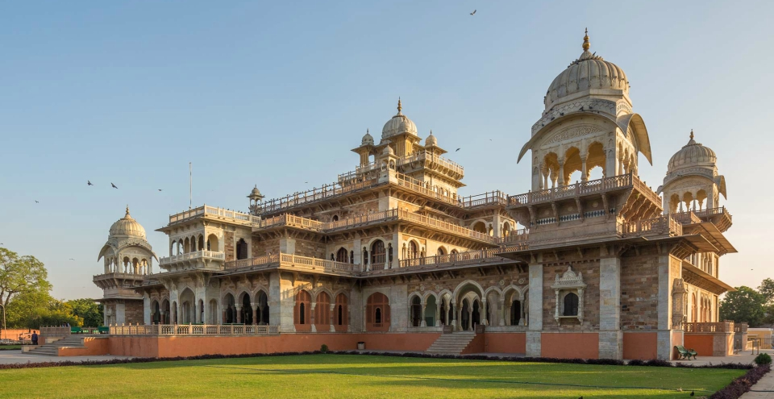
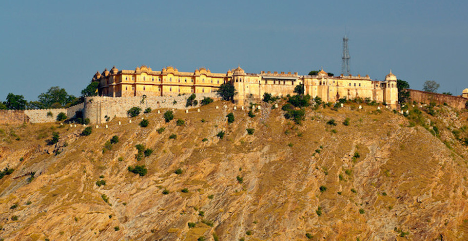
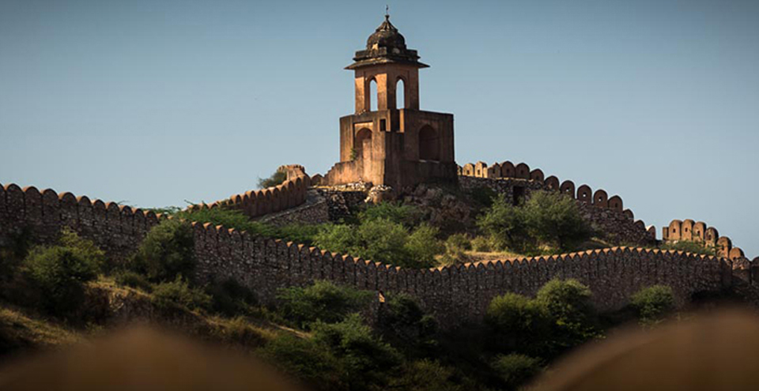
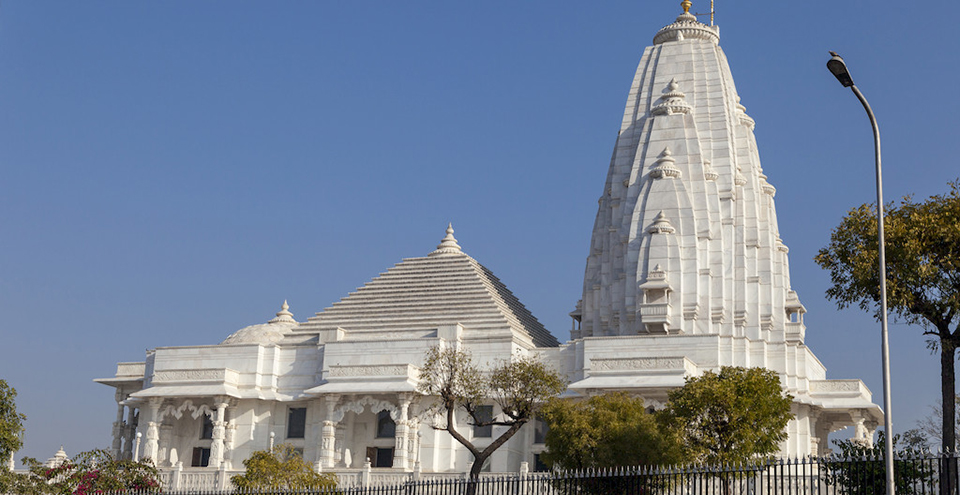
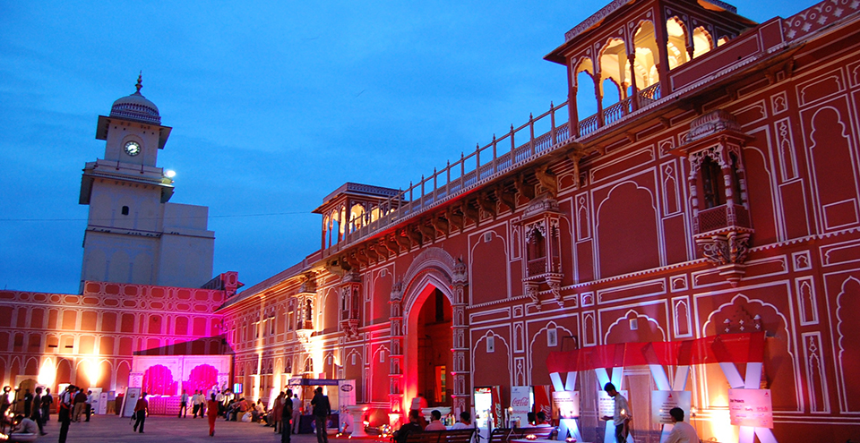
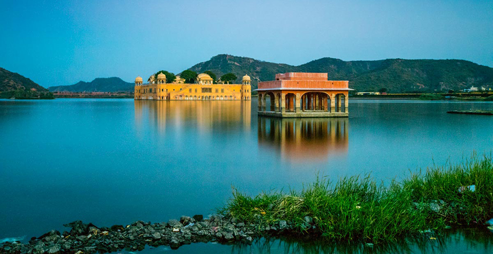
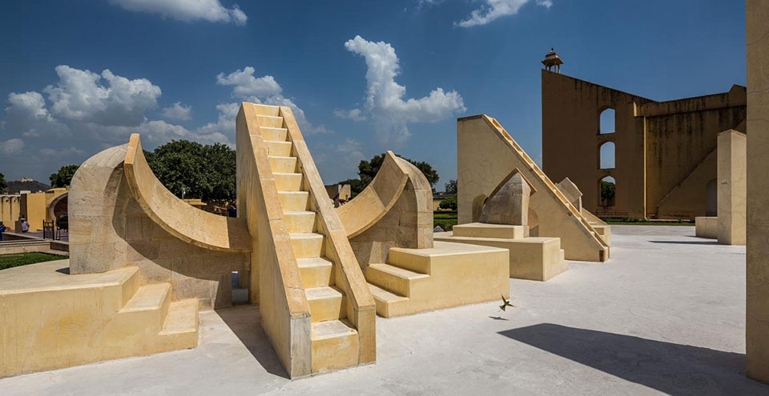
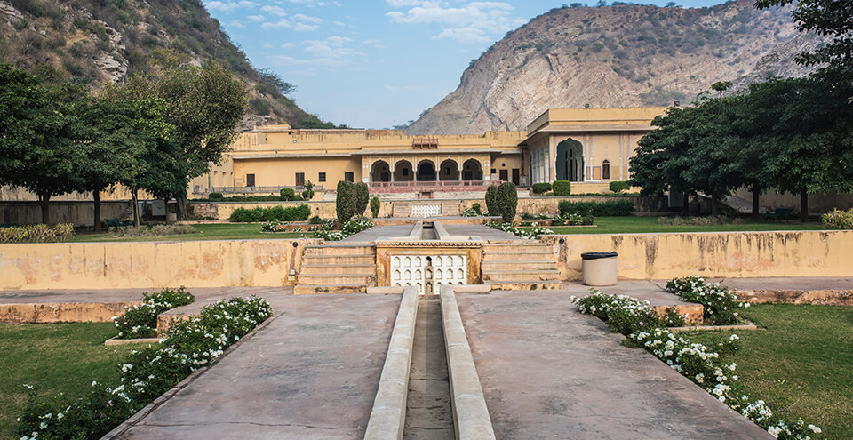

AMBER PALACE
Amber (pronounced Amer) is at a distance of about 11 kilometres from Jaipur. Now a UNESCO World Heritage Site, it was the bastion of the Kachwahas of Amber, until the capital was moved to the plains, to what is today Jaipur. The palace, located in craggy hills, is a beautiful melange of Hindu and Mughal styles. Raja Man Singh I began construction in 1592 and the palace, which was built as a strong, safe haven against attacking enemies, was completed by Mirja Raja Jai Singh. The contrast between the harsh exterior and the inviting interior couldn’t be more surprising. Made entirely of red sandstone and white marble, visitors are left spellbound by the magnificence of the palace that utilises carvings, precious stones and mirrors. The splendour of the palace is enhanced by the breath-taking vista of the Maota Lake in front.
LOCATION
HAWA MAHAL
Hawa Mahal, literally the Palace of Winds, was built in 1799 by the poet king Sawai Pratap Singh as a summer retreat for him and his family. It also served as a place where the ladies of the royal household could observe everyday life without being seen themselves. This unique five-storey structure is a blend of Hindu and Islamic architecture, and the exterior, with its small latticed windows (called jharokhas), resembles the crown of Lord Krishna. The windows also serve as an air-conditioner of sorts, blowing cool air throughout the palace, making it the perfect retreat during summers. Built from pink sandstone, the Hawa Mahal is Jaipur’s iconic landmark and visitors can view its complete magnificence from outside, from across the road. However, it is also possible to climb right up to the top for a wonderful view from the windows. Today, the Mahal is maintained by the Archaeological Department of the Government of Rajasthan and also houses an archaeological museum in the courtyard.
LOCATION- 
ALBERT HALL MUSEUM
The building gets its name from The Victoria and Albert Museum in London, the inspiration for its design. The exquisitely built Albert Hall is housed in the centre of Ram Niwas Garden. Sir Swinton Jacob (who is also the mastermind behind many other palaces in Rajasthan) conceptualised and designed it using styles from the Indo-Sarcenic architecture and the Prince of Wales laid the foundation stone of the building in 1876. The museum displays a wide range of metal objects, wood crafts, carpets, stone and metal sculptures, arms and weapons, natural stones and ivory goods. It also houses a large collection of miniatures from Bundi, Kota, Kishangarh, Udaipur and Jaipur schools of art.
LOCATION - 
NAHARGARH FORT
Nahargarh Fort sits proudly on a ridge of the Aravalli Hills, creating an impressive northern backdrop to the city of Jaipur. It was constructed during the reign of Jai Singh in 1734, and was later expanded in 1868. Nahargarh, which means abode of tigers, was a formidable barrier, defending Jaipur against attacking enemies. Within its walls, the fort houses Madhavendra Bhawan, the summer destination for the members of the royal family. Built by Sawai Madho Singh, the palace has 12 matching boudoirs for the queens, at the head of which is a suite for the king. They are all connected by corridors decorated with delicate murals. Even today the palace is a favoured spot for local picnickers. The fort looks brilliant when floodlit at night. Overlooking the city, it presents a glittering view of the city lights.
LOCATION - 
JAIGARH FORT
The Jaigarh Fort, located on one of the peaks of the Aravalli range of hills is built about 400 m above the Amber Fort.[1] It provides an excellent of view of Aravalli hills and the Amber Fort down below. The fort is 10 kilometres (6.2 mi) away from Jaipur city. It stands on a short diversion from the Jaipur-Delhi Highway, which leads to the Jaivana cannon at the Dungar Darwaza ('Darwaza' means "gate"), the same road leads to another important fort called the Nahargarh Fort. It can also be approached from the Amer Fort over a short climb along a steep hill track, arriving at the Awami Gate near the fort museum.The fort is highly fortified with thick walls of red sandstone and is spread over a layout plan with a length of 3 kilometres (1.9 mi) and a width of 1 kilometre (0.62 mi); it has an impressive square garden (50 metres (160 ft) square) within it.Ramparts in each corner are sloping and provide access to the upper level structures. The palaces have court rooms and halls with screened windows.
LOCATION - 
BIRLA TEMPLE
The Lakshmi-Narayan Temple, or the Birla Temple, as it is more popularly known as, is located at the base of Moti Dungari. Built on an elevated platform, this comparatively modern temple is built entirely of white marble and dominates the skyline of south Jaipur. The temple was commissioned and built by renowned Indian industrialists, the Birlas, in 1988. The temple is dedicated to Lord Vishnu, also called Narayan, and his companion, Lakshmi, the Goddess of wealth and good fortune. The temple is a work of art and has a marvellous display of exquisite carvings and sculptures covering many mythological themes. The eye is drawn to the images of Laxmi and Narayan, carved as they are, from one piece of marble. The top of the temple has three domes, each representing the three religions followed in India. This is designed to pay homage to secular India. The temple looks spectacular at night when it is lit up. Other than the main temple, the complex has a museum that exhibits the earlier belongings of the Birla family.
LOCATION - 
CITY PALACE
Located deep within the walled city, the City Palace Complex was conceived and built by Maharaja Sawai Jai Singh II, the founder of Jaipur. A beautiful fusion of Mughal and Rajput architecture, the palace is still home to the last ruling royal family which lives in a private section of the palace.
LOCATION - 
JAL MAHAL
One of the most wonderful sights in Jaipur is the beautiful Jal Mahal or Lake Palace. The light, sand coloured stone walls and the deep blue of the water make for a wonderful contrast. The palace appears to float in the centre of Man Sagar Lake, where its magnificent exteriors can be enjoyed by tourists.
LOCATION - 
JANTAR MANTAR
Now a UNESCO World Heritage Site, Jantar Mantar in Jaipur is considered to be the largest of the five astronomical observatories built by Maharaja Sawai Jai Singh II, the founder of Jaipur. It contains sixteen geometric devices, designed to measure time, track celestial bodies and observe the orbits of the planets around the sun. It also houses the Interpretation Centre that helps the tourists to understand about the working principles & chronolgy of the observatory. LOCATION - 
VIDYADHAR GARDEN
Located near Sisodia Garden, this is yet another beautiful garden which is a must-see for visitors. It is named after Vidyadhar Bhattacharya, the Chief Architect of Jaipur.
LOCATION